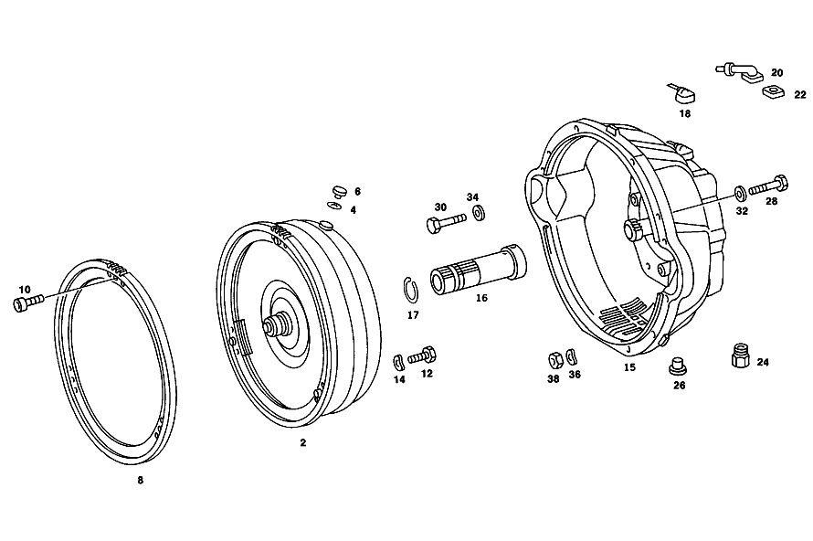

| № | Артикул | Название | Кол. | Примечание | Ограничение |
|---|---|---|---|---|---|
| 2 | A 117 250 02 02 | Гидротрансформатор | 1 | 310 MM | |
| 4 | N 007603 010100 | - Уплотнительное кольцо | 1 | 10X13.5 AL | |
| 6 | N 000908 010004 | - Резьбовая пробка | - | M10X1\-10.9 | |
| 6 | N 000000 000648 | - Резьбовая пробка | 1 | ||
| 8 | A 109 250 00 12 | - Зубчатый венец | 1 | ||
| 10 | N 910143 006000 | - Винт с 6-гр. глвк | 3 | M6X12 | |
| 12 | N 000933 008222 | Винт | 6 | ВЕДУЩИЙ ДИСК НА ГИДРОТРАНСФОРМАТОРЕ | |
| 14 | N 000137 008204 | Пружинная шайба | 6 | ВЕДУЩИЙ ДИСК НА ГИДРОТРАНСФОРМАТОРЕ | |
| 15 | A 116 250 27 05 | Корпус | 1 | ||
| 16 | A 116 272 09 20 | - Вал | 1 | (ВАЛ СТАТОРА) | |
| 17 | A 115 994 28 35 | - Пруж. стопорное кольцо | 1 | ||
| 20 | A 115 250 04 57 | - Крышка сапуна | 1 | ||
| 22 | A 115 257 00 80 | - уплотнение | - | [038] БОЛЬШЕ НЕ ПОСТАВЛЯЕТСЯ | |
| 24 | A 115 257 10 57 | - Резьбовое кольцо | 1 | ||
| 26 | N 000908 022010 | - Резьбовая пробка | 2 | ||
| 28 | N 000931 010357 | Винт | - | ||
| 28 | N 000933 010192 | Винт | 5 | CONVERTER HOUSING AND INTERMEDIATE FLANGE TO CYLINDER CRANKCASE | |
| 28 | N 000931 010239 | Винт | 1 | CONVERTER HOUSING AND INTERMEDIATE FLANGE TO CYLINDER CRANKCASE | |
| 28 | N 000931 010271 | Винт | 2 | КОРПУС ТРАНСФОРМАТОРА НА ПРОМЕЖУТОЧН.ФЛАНЦЕ | |
| 28 | A 094 990 33 06 | Винт | 2 | КОРПУС ТРАНСФОРМАТОРА НА ПРОМЕЖУТОЧН.ФЛАНЦЕ | |
| 30 | N 000931 012137 | Винт | 2 | СТАРТЕР НА ПРОМЕЖУТОЧНОМ ФЛАНЦЕ И КАРТЕРЕ СЦЕПЛЕНИЯ | |
| 32 | N 000125 010504 | ШАЙБА | 2 | КОРПУС ТРАНСФОРМАТОРА НА ПРОМЕЖУТОЧН.ФЛАНЦЕ | |
| 34 | N 000125 013008 | Шайба | - | ||
| 36 | N 000137 010201 | Пружинная шайба | 7 | ||
| 36 | N 000137 012203 | Пружинная шайба | - | ||
| 36 | A 094 990 42 05 | Пружинная шайба | 4 | ||
| 38 | N 000934 010009 | Гайка | - | ||
| 38 | N 304032 010002 | Шестигранная гайка | 2 | КОРПУС ТРАНСФОРМАТОРА НА ПРОМЕЖУТОЧН.ФЛАНЦЕ; M10 | |
| 38 | N 000934 012021 | Гайка | 2 | ||
| 50 | A 116 270 00 90 | - Корпус | 1 | с PRIMARY PUMP | |
| 52 | A 100 277 17 50 | - втулка | 1 | ||
| 52 | A 116 277 03 50 | - ВТУЛКА | 1 | ||
| 54 | A 004 997 05 47 | - УПЛОТНИТ. КОЛЬЦО | 1 | ||
| 56 | A 100 277 18 50 | - ВТУЛКА | 1 | ||
| 56 | A 116 277 02 50 | - втулка | 1 | ||
| 58 | A 004 997 05 48 | - Уплотнительное кольцо | 1 | ||
| 60 | N 000931 008046 | - Винт | - | ||
| 60 | N 304017 008018 | - Винт с 6-гранной головкой | 4 | M8X35 | |
| 62 | N 000137 008204 | - Пружинная шайба | 4 | ||
| 64 | N 000625 016008 | - Шарикоподшипник | 1 | [402] БОЛЬШЕ НЕ ПОСТАВЛЯЕТСЯ | |
| 66 | A 115 270 21 50 | - втулка | 1 | ||
| 68 | A 115 272 06 55 | - УПЛОТНИТ. КОЛЬЦО | - | ||
| 68 | A 316 272 04 55 | - Уплотнительное кольцо | 4 | [402] БОЛЬШЕ НЕ ПОСТАВЛЯЕТСЯ | |
| 70 | A 115 272 07 92 | - Резиновый наконечник | 1 | ||
| 72 | A 116 270 23 20 | - ФЛАНЕЦ | 1 | МУФТА K 1 [402] БОЛЬШЕ НЕ ПОСТАВЛЯЕТСЯ | |
| 74 | A 100 272 16 31 | - ПОРШЕНЬ | 1 | ||
| 74 | A 116 270 16 32 | - ПОРШЕНЬ | 1 | [402] БОЛЬШЕ НЕ ПОСТАВЛЯЕТСЯ | |
| 76 | A 109 272 09 92 | - Уплотнительное кольцо | 1 | ||
| 78 | A 115 272 14 92 | - Уплотнительное кольцо | 1 | ||
| 80 | A 100 993 02 02 | - Нажимная пружина | 28 | ||
| 82 | A 100 272 02 64 | - Тарелка пружины | 1 | ||
| 84 | A 115 994 08 35 | - Пруж. стопорное кольцо | 1 | ||
| 86 | A 100 272 12 52 | - РАСПОРНАЯ ШАЙБА | NB | 0.1 MM | |
| 86 | A 100 272 14 52 | - Компенсационная шайба | NB | 0.5 MM | |
| 88 | A 094 990 64 05 | - Стопорное кольцо | 1 | [402] БОЛЬШЕ НЕ ПОСТАВЛЯЕТСЯ | |
| 90 | A 002 981 32 10 | - Сепаратор иг. подшипника | 2 | ||
| 92 | A 115 272 00 25 | - Диск | 4 | 2.0 MM CLUTCH K 1 | |
| 94 | A 109 272 18 26 | - Диск | 1 | 5.0 MM CLUTCH K1 | |
| 98 | A 109 272 23 26 | - Диск | 4 | 5.0 MM AS REQUIRED CLUTCH K1 | |
| 98 | A 109 272 22 26 | - Диск | 4 | 4.5 MM AS REQUIRED CLUTCH K1 | |
| 100 | A 115 272 12 73 | - Кольцо | 1 | 153 MM CLUTCH K 1 | |
| 102 | A 116 270 10 43 | - ВОДИЛО ПЛАНЕТ. ПЕРЕДАЧИ | 1 | ПЕРЕДНИЙ ПЛАНЕТАРНЫЙ РЯД | |
| 104 | A 115 272 04 73 | - Кольцо | 1 | ||
| 106 | A 116 272 00 27 | - ОПОРА ЛЕНТЫ | 1 | ПЕРЕДАЧА ЗАДНЕГО ХОДА [402] БОЛЬШЕ НЕ ПОСТАВЛЯЕТСЯ | |
| 108 | A 000 981 99 10 | - ПОДШИПНИК ИГОЛЬЧАТЫЙ | 1 | ||
| 110 | A 100 272 08 52 | - РАСПОРНАЯ ШАЙБА | NB | 0.1 MM | |
| 110 | A 100 272 09 52 | - РАСПОРНАЯ ШАЙБА | NB | 0.2 MM | |
| 110 | A 100 272 10 52 | - РАСПОРНАЯ ШАЙБА | - | ||
| 110 | A 389 262 57 52 | - Дистанционная шайба | NB | 0.5 MM 0,5 MM | |
| 112 | A 116 270 22 20 | - ФЛАНЕЦ | 1 | МУФТА K 2 [402] БОЛЬШЕ НЕ ПОСТАВЛЯЕТСЯ | |
| 114 | A 116 272 01 31 | - ПОРШЕНЬ | 1 | ||
| 116 | A 109 272 08 92 | - Уплотнительное кольцо | 1 | ||
| 118 | A 109 272 04 92 | - Уплотнительное кольцо | 1 | ||
| 120 | A 109 270 00 31 | - ОБГОННАЯ МУФТА | 1 | ||
| 122 | A 115 272 54 24 | - ОБОЙМА ФРИКЦ. ДИСКОВ | 1 | [402] БОЛЬШЕ НЕ ПОСТАВЛЯЕТСЯ | |
| 124 | A 115 272 04 73 | - Кольцо | 1 | ||
| 126 | A 115 272 00 25 | - Диск | 4 | 2.0 MM CLUTCH K 2 | |
| 128 | A 109 272 22 26 | - Диск | 1 | 4.5 MM CLUTCH K2 | |
| 130 | A 109 272 21 26 | - Диск | 1 | 5.0 MM CLUTCH K2 | |
| 130 | A 109 272 23 26 | - Диск | 1 | 5.0 MM CLUTCH K2 | |
| 132 | A 109 272 06 26 | - Диск | 3 | 3.0 MM AS REQUIRED CLUTCH K2 | |
| 132 | A 109 272 08 26 | - Наружный диск | 3 | 3.5 MM AS REQUIRED CLUTCH K2 | |
| 134 | A 115 272 13 73 | - Кольцо | 1 | ||
| 136 | A 002 981 31 10 | - Игольчатый подшипник | 1 | [402] БОЛЬШЕ НЕ ПОСТАВЛЯЕТСЯ | |
| 138 | A 115 993 41 03 | - Нажимная пружина | 24 | ||
| 140 | A 116 272 00 67 | - Направляющее кольцо | 1 | ||
| 142 | A 115 272 34 62 | - Упорная шайба | 1 | ||
| 144 | A 109 272 09 20 | - ВАЛ | 1 | (ПОЛЫЙ ВАЛ) [402] БОЛЬШЕ НЕ ПОСТАВЛЯЕТСЯ | |
| 146 | A 109 994 00 35 | - СТОПОРН. КОЛЬЦО | 1 | [402] БОЛЬШЕ НЕ ПОСТАВЛЯЕТСЯ | |
| 148 | A 116 270 11 25 | - ПРИВОДНОЙ ВАЛ | 1 | (ПРОМЕЖУТОЧНЫЙ ВАЛ) | |
| 150 | A 112 994 07 35 | - Пруж. стопорное кольцо | 1 | 125 MM | |
| 152 | A 115 272 02 73 | - Кольцо | 1 | 130 MM | |
| 154 | A 005 981 81 10 | - Сепаратор иг. подшипника | 1 | ||
| 156 | A 002 981 30 10 | - Игольчатый подшипник | 1 | ||
| 158 | A 109 270 16 43 | - ВОДИЛО ПЛАНЕТ. ПЕРЕДАЧИ | 1 | ЗАДНИЙ ПЛАНЕТАРНЫЙ РЯД | |
| 160 | A 007 981 39 10 | - Игольчатый подшипник | 1 | ||
| 162 | A 004 981 40 10 | - Сепаратор иг. подшипника | 1 | ||
| 164 | A 115 272 37 62 | - Упорная шайба | 1 | ||
| 166 | A 001 981 18 25 | - Рад. шарикоподшипник | 1 | ||
| 168 | A 116 270 09 25 | - ПРИВОДНОЙ ВАЛ | 1 | [402] БОЛЬШЕ НЕ ПОСТАВЛЯЕТСЯ | |
| 172 | A 115 272 02 73 | - Кольцо | 1 | ||
| 174 | A 100 272 04 55 | - Уплотнительное кольцо | 1 | ||
| 176 | A 100 272 12 52 | - РАСПОРНАЯ ШАЙБА | NB | 0.1 MM | |
| 176 | A 100 272 14 52 | - Компенсационная шайба | NB | 0.5 MM | |
| 178 | A 001 981 80 10 | - Игольчатый подшипник | 1 | ||
| 180 | A 115 270 76 11 | - КОРПУС КП | 1 | [402] БОЛЬШЕ НЕ ПОСТАВЛЯЕТСЯ | |
| 182 | A 115 997 06 30 | - Резьбовая пробка | 1 | ||
| 184 | N 007603 008105 | - Уплотнительное кольцо | 1 | ||
| 186 | A 006 997 61 46 | - Уплотнительное кольцо | 1 | [014] UP TO TRANSMISSION 001 006209 | |
| 188 | A 115 272 11 92 | - Уплотнительное кольцо | 1 | ||
| 194 | A 115 270 08 68 | - НАПРАВЛ. ТРУБКА | 1 | [018] AGAINST SQUEALING OF TRANSMISSION | |
| 196 | A 116 277 00 40 | - Держатель | 1 | СВЕРХУ | |
| 200 | A 115 277 24 40 | - Держатель | 1 | ВНИЗУ [015] FROM TRANSMISSION:001 006210 | |
| 202 | A 116 270 34 07 | - КОРПУС ЗОЛОТНИКА | 1 | с REGULATOR VALVE,MODULATOR VALVE | |
| 204 | A 115 993 20 10 | - пружина | 2 | [402] БОЛЬШЕ НЕ ПОСТАВЛЯЕТСЯ | |
| 206 | N 000931 006115 | - Винт | - | ||
| 206 | N 000933 006151 | - Винт | 2 | ||
| 208 | N 000912 006043 | - Винт | 1 | ||
| 210 | N 000137 006204 | - Пружинная шайба | 3 | ||
| 214 | A 000 545 42 06 | - Переключатель | 1 | ПЕРЕКЛЮЧАТЕЛЬ БЛОКИРОВКИ ПУСКА ДВИГАТЕЛЯ И ФОНАРЕЙ ЗАДНЕГО ХОДА [015] FROM TRANSMISSION:001 006210 | |
| 214 | A 000 545 46 06 | - Переключатель | 1 | ПЕРЕКЛЮЧАТЕЛЬ БЛОКИРОВКИ ПУСКА ДВИГАТЕЛЯ И ФОНАРЕЙ ЗАДНЕГО ХОДА [015] FROM TRANSMISSION:001 006210 | |
| 218 | N 000137 005203 | - Пружинная шайба | 2 | ||
| 222 | N 000933 005081 | - Винт | 2 | [015] FROM TRANSMISSION:001 006210 | |
| 224 | A 115 278 25 20 | - Рычаг селектора диапазон. | 1 | [402] БОЛЬШЕ НЕ ПОСТАВЛЯЕТСЯ [024] FROM TRANSMISSION 001 006210 ON 116.032,033 L.H.D. | |
| 234 | A 115 545 01 42 | - ПОВОДОК | 1 | [015] FROM TRANSMISSION:001 006210 | |
| 236 | N 000084 004174 | - Винт | 1 | [015] FROM TRANSMISSION:001 006210 | |
| 238 | N 000137 004202 | - Пружинная шайба | 1 | [015] FROM TRANSMISSION:001 006210 | |
| 240 | A 115 278 16 10 | - Вал | 1 | [015] FROM TRANSMISSION:001 006210 | |
| 248 | N 000931 006095 | - Винт | 1 | РЫЧАГ СЕЛЕКТОРА НА ВАЛУ | |
| 250 | N 000137 006205 | - Пружинная шайба | 1 | РЫЧАГ СЕЛЕКТОРА НА ВАЛУ | |
| 252 | N 000934 006013 | - Гайка | - | ||
| 252 | N 304032 006008 | - Шестигранная гайка | 1 | РЫЧАГ СЕЛЕКТОРА НА ВАЛУ | |
| 260 | A 115 270 04 57 | - Пластина фиксации сел.АКП | 1 | ||
| 262 | N 006912 006006 | - Винт | 1 | ||
| 264 | N 000137 006204 | - Пружинная шайба | 1 | ||
| 266 | A 109 270 10 89 | - Нажимной элемент | 1 | [032] FROM TRANSMISSION: 001 000108 | |
| 268 | A 109 270 11 89 | - Нажимной элемент | 1 | [032] FROM TRANSMISSION: 001 000108 | |
| 270 | A 126 277 11 58 | - Крепление упл. кольца | - | [414] СТАРУЮ ДЕТАЛЬ УСТАНАВЛИВАТЬ БОЛЬШЕ НЕ РАЗРЕШАЕТСЯ | |
| 270 | A 140 277 01 51 | - Проставочное кольцо | 2 | [032] FROM TRANSMISSION: 001 000108 | |
| 272 | A 010 997 08 45 | - УПЛОТНИТ. КОЛЬЦО | - | ||
| 272 | A 016 997 34 48 | - Кольцевая прокладка | 2 | ||
| 274 | A 115 993 00 22 | - пружина | 1 | [402] БОЛЬШЕ НЕ ПОСТАВЛЯЕТСЯ | |
| 276 | A 109 277 02 75 | - ШТИФТ | 1 | ПО НЕОБХОДИМОСТИ 23 MM | |
| 276 | A 109 277 03 75 | - Нажимной штифт | 1 | ПО НЕОБХОДИМОСТИ 24mm | |
| 276 | A 109 277 04 75 | - Нажимной штифт | 1 | 25 MM AS REQUIRED | |
| 276 | A 109 277 05 75 | - Нажимной штифт | 1 | 26 MM AS REQUIRED | |
| 278 | A 115 277 02 74 | - Палец | 1 | ||
| 280 | A 115 277 04 24 | - РЫЧАГ | 1 | ||
| 282 | A 115 277 53 75 | - Нажимной штифт | 2 | ||
| 284 | A 115 993 02 25 | - пружина | 1 | ||
| 286 | A 115 277 17 71 | - болт | 1 | ||
| 288 | A 115 990 04 51 | - гайка | 1 | ||
| 290 | A 109 277 02 75 | - ШТИФТ | 1 | ПО НЕОБХОДИМОСТИ 23 MM | |
| 290 | A 109 277 03 75 | - Нажимной штифт | 1 | ПО НЕОБХОДИМОСТИ 24mm | |
| 290 | A 109 277 04 75 | - Нажимной штифт | 1 | 25 MM AS REQUIRED | |
| 290 | A 109 277 05 75 | - Нажимной штифт | 1 | 26 MM AS REQUIRED | |
| 292 | A 115 270 74 32 | - ПОРШЕНЬ | 1 | [402] БОЛЬШЕ НЕ ПОСТАВЛЯЕТСЯ | |
| 294 | A 115 272 08 92 | - Уплотнительное кольцо | 1 | ||
| 296 | A 115 994 17 35 | - Пруж. стопорное кольцо | 1 | ||
| 298 | A 115 993 18 05 | - пружина | 1 | [402] БОЛЬШЕ НЕ ПОСТАВЛЯЕТСЯ | |
| 300 | A 115 277 37 03 | - Крышка | 1 | [015] FROM TRANSMISSION:001 006210 | |
| 302 | A 008 997 35 45 | - Уплотнительное кольцо | 1 | ||
| 304 | A 115 270 24 89 | - Клапан заправочный | 1 | ПЕРЕДАЧА ЗАДНЕГО ХОДА [015] FROM TRANSMISSION:001 006210 | |
| 306 | A 002 997 21 48 | - Уплотнительное кольцо | 1 | [015] FROM TRANSMISSION:001 006210 | |
| 308 | A 094 990 89 07 | - Уплотнительное кольцо | 1 | 16X22 [015] FROM TRANSMISSION:001 006210 | |
| 310 | A 115 994 30 35 | - СТОПОРН. КОЛЬЦО | 1 | [402] БОЛЬШЕ НЕ ПОСТАВЛЯЕТСЯ | |
| 312 | A 115 270 14 59 | - Рычаг | 1 | [015] FROM TRANSMISSION:001 006210 | |
| 314 | A 007 997 44 47 | - Уплотнительное кольцо | 1 | [015] FROM TRANSMISSION:001 006210 | |
| 316 | A 115 990 17 40 | - Диск | 1 | ||
| 318 | N 006799 009002 | - Стопорная шайба | 1 | ||
| 320 | A 115 270 08 59 | - Рычаг | 1 | УПРАВЛ. ДАВЛЕНИЕ | |
| 322 | N 000933 006123 | - Винт | 1 | ||
| 324 | N 000137 006204 | - Пружинная шайба | 2 | ||
| 326 | N 000934 006013 | - Гайка | - | ||
| 326 | N 304032 006008 | - Шестигранная гайка | 1 | ||
| 328 | A 116 270 11 62 | - ЛЕНТА ТОРМОЗНАЯ | - | ||
| 328 | A 116 270 18 62 | - Тормозная лента | 1 | ПЕРЕДАЧА ЗАДНЕГО ХОДА | |
| 330 | A 100 993 95 01 | - ПРУЖИНА | 1 | [014] UP TO TRANSMISSION 001 006209 | |
| 336 | A 115 270 59 32 | - ПОРШЕНЬ | 1 | [014] UP TO TRANSMISSION 001 006209 | |
| 338 | A 115 272 03 92 | - Уплотнительное кольцо | 1 | [014] UP TO TRANSMISSION 001 006209 | |
| 342 | A 115 277 19 03 | - КРЫШКА | 1 | [014] UP TO TRANSMISSION 001 006209 | |
| 346 | A 010 997 59 45 | - Уплотнительное кольцо | 1 | [014] UP TO TRANSMISSION 001 006209 | |
| 348 | A 115 994 14 35 | - Пруж. стопорное кольцо | 1 | [014] UP TO TRANSMISSION 001 006209 | |
| 354 | A 000 304 11 90 | - Корпус | 1 | (МАГНИТ. КАТУШКА) [015] FROM TRANSMISSION:001 006210 | |
| 356 | A 000 304 12 90 | - ПЕРЕКЛ.МАГНИТ | 1 | (РАМА МАГНИТА) [015] FROM TRANSMISSION:001 006210 | |
| 358 | A 000 304 25 90 | - ПЕРЕКЛ.МАГНИТ | 1 | (МАГНИТ. КАТУШКА) [015] FROM TRANSMISSION:001 006210 | |
| 360 | A 000 304 24 90 | - ПЕРЕКЛ.МАГНИТ | 1 | (РАМА МАГНИТА) [015] FROM TRANSMISSION:001 006210 | |
| 362 | A 010 997 77 45 | - Уплотнительное кольцо | 1 | ||
| 364 | A 008 997 30 48 | - Уплотнительное кольцо | 1 | [015] FROM TRANSMISSION:001 006210 | |
| 366 | A 001 997 35 48 | - Уплотнительное кольцо | 1 | [015] FROM TRANSMISSION:001 006210 | |
| 368 | A 115 304 01 60 | - Уплотнительное кольцо | 1 | ||
| 370 | A 115 270 55 32 | - ПОРШЕНЬ | 1 | [014] UP TO TRANSMISSION 001 006209 | |
| 370 | A 115 270 71 32 | - Поршень | 1 | [697] ДЕТАЛЬ ПОСТАВЛЯЕТСЯ ТОЛЬКО/ИЛИ ТАКЖЕ КАК ЗАП.ЧАСТЬ | |
| 372 | A 115 277 02 55 | - Уплотнительное кольцо | 1 | [014] UP TO TRANSMISSION 001 006209 | |
| 376 | A 008 997 35 45 | - Уплотнительное кольцо | 1 | [014] UP TO TRANSMISSION 001 006209 | |
| 380 | A 115 993 23 05 | - пружина | 1 | [402] БОЛЬШЕ НЕ ПОСТАВЛЯЕТСЯ | |
| 384 | A 115 277 16 77 | - НАПРАВЛ. ЭЛЕМЕНТ | 1 | [402] БОЛЬШЕ НЕ ПОСТАВЛЯЕТСЯ | |
| 386 | A 115 277 37 03 | - Крышка | 1 | ||
| 388 | A 115 994 30 35 | - СТОПОРН. КОЛЬЦО | 1 | [402] БОЛЬШЕ НЕ ПОСТАВЛЯЕТСЯ | |
| 390 | A 115 270 60 62 | - ЛЕНТА ТОРМОЗНАЯ | - | ||
| 390 | A 115 270 72 62 | - Тормозная лента | 1 | B 2 | |
| 392 | A 115 270 56 62 | - ЛЕНТА ТОРМОЗНАЯ | - | ||
| 392 | A 115 270 69 62 | - Тормозная лента | 1 | B 1 | |
| 394 | N 000137 008204 | - Пружинная шайба | 11 | ||
| 396 | N 000931 008327 | - Винт | - | ||
| 396 | N 304017 008043 | - Винт с 6-гранной головкой | 11 | M8X55 \- 8.8 | |
| 398 | A 115 277 26 80 | - ПРОКЛАДКА УПЛОТНИТЕЛЬНАЯ | - | ||
| 398 | A 115 277 33 80 | - Уплотнение | 1 | ||
| 400 | A 115 272 01 17 | - Шестерня | - | ||
| 400 | A 722 272 00 17 | - ШЕСТЕРНЯ | 1 | [402] БОЛЬШЕ НЕ ПОСТАВЛЯЕТСЯ | |
| 402 | A 115 278 07 74 | - Палец | 1 | ||
| 404 | A 000 994 42 41 | - Стопорное кольцо | 1 | ||
| 406 | A 115 993 02 22 | - пружина | 1 | ||
| 408 | A 115 278 02 21 | - Собачка | 1 | ||
| 410 | A 115 270 06 65 | - Тяга | 1 | ||
| 410 | A 115 270 06 65 | - Тяга | 1 | ||
| 412 | A 115 278 05 17 | - Ролик | 1 | ПОДВИЖН. | |
| 414 | A 115 278 08 74 | - Палец | 1 | ||
| 416 | A 115 990 21 40 | - ШАЙБА | 1 | ||
| 418 | A 000 981 51 87 | - Игла подшипника | 23 | ||
| 420 | A 115 278 04 17 | - Ролик | 1 | НЕПОДВИЖН. СТОЯЩ. | |
| 422 | A 094 990 61 07 | - Стопорная шайба | 1 | ||
| 426 | A 115 278 00 62 | - Упорная шайба | 1 | ||
| 428 | A 115 270 04 78 | - Листовая рессора | 1 | ||
| 430 | A 115 278 04 40 | - Держатель | 1 | ||
| 432 | N 000137 006204 | - Пружинная шайба | 1 | ||
| 434 | N 000933 006102 | - Винт | - | ||
| 434 | N 304017 006016 | - Винт с 6-гранной головкой | 1 | M6X16 | |
| 436 | A 109 270 00 74 | - РЕГУЛЯТОР | 1 | ЦЕНТРОБЕЖ. РЕГУЛЯТОР | |
| 438 | A 115 272 03 55 | - УПЛОТНИТ. КОЛЬЦО | 3 | ||
| 438 | A 115 272 13 55 | - Уплотнительное кольцо | 3 | ||
| 440 | A 115 270 00 98 | - Масляный фильтр | 1 | ||
| 440 | A 115 270 00 98 | Масляный фильтр | 2 | ||
| 442 | A 115 270 03 42 | - Ведущее колесо | 1 | ||
| 444 | A 115 993 04 26 | - Тарельчатая пружина | 1 | ||
| 446 | A 123 270 17 11 | - Корпус коробки передач | 1 | ||
| 448 | A 115 997 01 03 | - Пробка | 1 | ||
| 448 | A 115 997 03 03 | - Пробка | 1 | ||
| 450 | A 115 993 38 03 | - Нажимная пружина | 1 | ||
| 452 | A 115 277 62 75 | - Нажимной штифт | 1 | ||
| 454 | A 000 981 81 85 | - Шар | 1 | ||
| 456 | N 007603 010100 | - Уплотнительное кольцо | 1 | 10X13.5 AL | |
| 458 | A 115 997 01 30 | - ЗАГЛУШКА РЕЗЬБОВАЯ | 1 | [402] БОЛЬШЕ НЕ ПОСТАВЛЯЕТСЯ | |
| 460 | N 007603 012104 | - Уплотнительное кольцо | 1 | ||
| 462 | N 007604 012102 | - Резьбовая пробка | 1 | ||
| 464 | A 115 277 50 38 | - Поршень | 1 | ||
| 466 | A 115 993 05 04 | - пружина | 1 | [402] БОЛЬШЕ НЕ ПОСТАВЛЯЕТСЯ | |
| 468 | A 115 997 06 30 | - Резьбовая пробка | 2 | ||
| 470 | N 007603 008105 | - Уплотнительное кольцо | 2 | ||
| 472 | A 115 270 03 27 | - Ведущее колесо | 1 | ||
| 474 | A 115 274 06 28 | - Корпус | 1 | ||
| 476 | A 005 997 52 45 | - Уплотнительное кольцо | 1 | ||
| 478 | A 115 274 00 60 | - УПЛОТНИТ. КОЛЬЦО | 1 | [402] БОЛЬШЕ НЕ ПОСТАВЛЯЕТСЯ | |
| 480 | A 114 991 01 29 | - Шар | 1 | ПОРШНЕВОЙ НАСОС | |
| 482 | A 115 993 13 02 | - пружина | 1 | ПОРШНЕВОЙ НАСОС [402] БОЛЬШЕ НЕ ПОСТАВЛЯЕТСЯ | |
| 484 | N 007603 018100 | - Уплотнительное кольцо | 1 | ||
| 486 | A 115 997 03 30 | - Резьбовая пробка | 1 | ||
| 488 | A 115 270 51 32 | - Поршень | 1 | ||
| 488 | A 115 270 75 32 | - ПОРШЕНЬ | 1 | ||
| 490 | A 009 997 09 45 | - Уплотнительное кольцо | 1 | ||
| 492 | A 115 277 16 71 | - болт | 1 | ||
| 494 | N 000137 006204 | - Пружинная шайба | 1 | ||
| 496 | N 000933 006130 | - Винт | 1 | ||
| 498 | N 000137 006204 | - Пружинная шайба | 1 | ||
| 500 | N 000625 900201 | - Шарикоподшипник | 1 | ||
| 502 | N 000472 062000 | - Стопорное кольцо | 1 | ||
| 504 | A 008 997 92 46 | - Сальник | 1 | ||
| 504 | A 012 997 87 47 | - Уплотнительное кольцо | 1 | ||
| 504 | A 012 997 87 47 | - Уплотнительное кольцо | 1 | ||
| 506 | A 115 993 34 04 | - пружина | 1 | [402] БОЛЬШЕ НЕ ПОСТАВЛЯЕТСЯ | |
| 508 | A 115 277 41 31 | - Поршень | 1 | ||
| 510 | A 115 277 27 40 | - ДЕРЖАТЕЛЬ | 1 | ||
| 512 | N 007985 005127 | - Винт | - | ||
| 512 | N 007985 005504 | - Винт | 1 | M5X12 | |
| 514 | N 000137 005200 | - Пружинная шайба | 1 | ||
| 516 | N 000137 008204 | - Пружинная шайба | 10 | ||
| 518 | N 000931 008046 | - Винт | - | ||
| 518 | N 304017 008018 | - Винт с 6-гранной головкой | 10 | M8X35 | |
| 520 | A 109 271 00 80 | - ПРОКЛАДКА УПЛОТНИТЕЛЬНАЯ | - | ||
| 520 | A 109 271 01 80 | - уплотнение | 1 | ||
| 520 | A 115 271 14 80 | - ПРОКЛАДКА УПЛОТНИТЕЛЬНАЯ | - | ||
| 520 | A 115 271 17 80 | - ПРОКЛАДКА УПЛОТНИТЕЛЬНАЯ | 1 | ||
| 522 | A 114 993 10 01 | - пружина | 1 | [402] БОЛЬШЕ НЕ ПОСТАВЛЯЕТСЯ | |
| 524 | A 114 277 00 77 | - Пружинная направляющая | 1 | ||
| 528 | A 123 270 00 79 | - Мембрана | 1 | [101] FROM TRANSMISSION:001 024821 | |
| 530 | A 002 997 57 48 | - Уплотнительное кольцо | 1 | [101] FROM TRANSMISSION:001 024821 | |
| 532 | A 115 994 29 35 | - Пруж. стопорное кольцо | 1 | [101] FROM TRANSMISSION:001 024821 | |
| 534 | A 114 277 02 40 | - Держатель | 1 | [101] FROM TRANSMISSION:001 024821 | |
| 536 | A 116 276 01 83 | - КОЛПАЧОК | 1 | ||
| 538 | A 115 277 29 75 | - Нажимной штифт | 1 | 39.65 MM | |
| 538 | A 115 277 30 75 | - Нажимной штифт | 1 | 40.15 MM | |
| 538 | A 123 277 02 75 | - Нажимной штифт | 1 | 39.15MM | |
| 540 | A 115 993 84 02 | - пружина | 1 | [402] БОЛЬШЕ НЕ ПОСТАВЛЯЕТСЯ | |
| 542 | A 115 270 06 72 | - Пробка | 1 | ||
| 544 | A 006 997 41 45 | - Уплотнительное кольцо | - | ||
| 544 | A 007 997 14 48 | - Уплотнительное кольцо | - | ||
| 544 | A 018 997 19 48 | - Кольцевая прокладка | 1 | ||
| 546 | A 115 277 08 58 | - Эксцентриковая шайба | 1 | ||
| 548 | A 116 353 03 45 | - Фланец | 1 | ||
| 550 | A 123 990 00 60 | - гайка | 1 | ||
| 552 | A 116 272 00 76 | - Диск | 1 | ||
| 554 | A 116 270 53 07 | - Корпус перекл. золотника | - | ||
| 554 | A 116 270 22 07 | - Корпус перекл. золотника | 1 | ||
| 556 | A 115 277 29 36 | - ДЕТАЛЬ КЛАПАНА | 1 | [402] БОЛЬШЕ НЕ ПОСТАВЛЯЕТСЯ | |
| 558 | A 115 993 15 05 | - пружина | 2 | ||
| 560 | A 115 277 26 36 | - Тарелка клапана | 1 | ||
| 562 | A 109 993 17 01 | - Нажимная пружина | 1 | ||
| 564 | A 116 277 04 14 | - ПЛАСТИНА ПРОМЕЖУТОЧНАЯ | 1 | ||
| 564 | A 116 277 13 14 | - ПЛАСТИНА ПРОМЕЖУТОЧНАЯ | 1 | ||
| 566 | A 116 277 04 80 | - ПРОКЛАДКА УПЛОТНИТЕЛЬНАЯ | - | ||
| 566 | A 116 277 08 80 | - Уплотнение | 1 | ||
| 568 | A 115 277 08 83 | - ЩИТОК ЗАКРЫВ. | 1 | [402] БОЛЬШЕ НЕ ПОСТАВЛЯЕТСЯ | |
| 570 | A 115 277 12 80 | - ПРОКЛАДКА УПЛОТНИТЕЛЬНАЯ | - | ||
| 570 | A 115 277 32 80 | - Уплотнение | 1 | ||
| 572 | N 005401 305500 | - Шар | 2 | ||
| 574 | A 115 277 23 36 | - Тарелка клапана | 1 | ||
| 576 | A 094 990 26 05 | - Винт | 1 | ||
| 578 | A 094 990 26 05 | - Винт | 11 | ||
| 580 | A 116 277 00 75 | - Нажимной штифт | 1 | ||
| 582 | A 109 277 00 74 | - БОЛТ | 1 | [402] БОЛЬШЕ НЕ ПОСТАВЛЯЕТСЯ | |
| 584 | A 115 277 40 29 | - Переключающий золотник | 1 | ||
| 586 | A 116 993 70 01 | - пружина | 2 | ||
| 588 | N 005401 305500 | - Шар | 7 | ||
| 590 | A 115 991 01 60 | - ШТИФТ | 1 | ||
| 592 | A 115 277 25 36 | - Тарелка клапана | 1 | ОБРАТНЫЙ КЛАПАН | |
| 594 | A 116 277 03 14 | - ПЛАСТИНА ПРОМЕЖУТОЧНАЯ | 1 | ||
| 594 | A 116 277 18 14 | - ПЛАСТИНА ПРОМЕЖУТОЧНАЯ | 1 | [402] БОЛЬШЕ НЕ ПОСТАВЛЯЕТСЯ | |
| 596 | A 115 270 01 98 | - ФИЛЬТР | 1 | ||
| 596 | A 115 270 02 98 | - Масляный фильтр | 1 | ||
| 598 | A 115 270 04 70 | - Регулирующий золотник | 1 | ||
| 600 | A 115 277 11 83 | - ЩИТОК ЗАКРЫВ. | 1 | [402] БОЛЬШЕ НЕ ПОСТАВЛЯЕТСЯ | |
| 602 | A 115 277 18 80 | - ПРОКЛАДКА УПЛОТНИТЕЛЬНАЯ | - | ||
| 602 | A 115 277 28 80 | - уплотнение | 1 | ||
| 604 | A 094 990 26 05 | - Винт | 3 | ||
| 606 | A 115 277 06 74 | БОЛТ | 4 | [402] БОЛЬШЕ НЕ ПОСТАВЛЯЕТСЯ | |
| 606 | A 109 277 05 74 | - БОЛТ | 1 | [402] БОЛЬШЕ НЕ ПОСТАВЛЯЕТСЯ | |
| 608 | A 115 277 06 73 | - предохранитель | 6 | ||
| 610 | A 115 993 97 03 | - пружина | 1 | ПРЕДОХРАНИТЕЛЬНЫЙ КЛАПАН [402] БОЛЬШЕ НЕ ПОСТАВЛЯЕТСЯ | |
| 612 | N 005401 305500 | - Шар | 1 | ||
| 614 | A 114 991 02 29 | - Шар | 2 | [402] БОЛЬШЕ НЕ ПОСТАВЛЯЕТСЯ | |
| 616 | N 000931 006191 | - Винт | 10 | ПЛАСТИНА РАСПРЕДЕЛЕН.МАСЛА НА КОРПУСЕ ЗОЛОТНИКА ВКЛЮЧ. | |
| 616 | N 000931 006055 | - Винт | 2 | ПЛАСТИНА РАСПРЕДЕЛЕН.МАСЛА НА КОРПУСЕ ЗОЛОТНИКА ВКЛЮЧ. | |
| 618 | N 000137 006204 | - Пружинная шайба | 12 | ПЛАСТИНА РАСПРЕДЕЛЕН.МАСЛА НА КОРПУСЕ ЗОЛОТНИКА ВКЛЮЧ. | |
| 620 | N 900421 006001 | - Резьбовая вставка | NB | ||
| 620 | N 900421 005000 | - Резьбовая вставка | NB | ||
| 622 | A 115 270 10 68 | - Вставная трубка | 2 | ||
| 624 | A 115 277 28 40 | - Держатель | 2 | ||
| 626 | A 115 277 33 50 | - втулка | 4 | ||
| 628 | N 000933 008152 | - Винт | - | ||
| 628 | N 304017 008027 | - Винт с 6-гранной головкой | 11 | КОРПУС ЗОЛОТН. ПЕРЕКЛЮЧ. НА КП | |
| 630 | N 000137 008204 | - Пружинная шайба | 11 | КОРПУС ЗОЛОТН. ПЕРЕКЛЮЧ. НА КП | |
| 632 | A 109 270 02 98 | - Масляный фильтр | 1 | RANGE OF DELIVERY COMPRISES: 1 GASKET 115 271 15 80 OIL PAN 2 SEAL 007603 014104 OIL FILLER TO OIL PAN 1 SEAL 007603 010100 OIL DRAN CONVERTER HOUSING | |
| 634 | A 109 277 02 53 | - втулка | 2 | ||
| 636 | N 914026 005112 | - Винт с неспадающей шайбой | 2 | МАСЛ.ФИЛЬТР НА КОРПУСЕ ЗОЛОТНИКА ВКЛЮЧ. | |
| 638 | A 115 270 01 12 | - Поддон масляный | 1 | ||
| 640 | A 115 271 15 80 | - ПРОКЛАДКА УПЛОТНИТЕЛЬНАЯ | 1 | ||
| 640 | A 115 271 16 80 | - Уплотнение | 1 | ||
| 642 | N 000933 008153 | - Винт | 4 | M8X25\-8.8 | |
| 644 | A 115 271 01 94 | - Прокладка | 4 | ||
| 650 | A 114 270 00 80 | КОМПЛЕКТ УПЛОТНЕНИЙ | - | ||
| 650 | A 114 270 32 01 | набор уплотнений | 1 | КОРПУС ЗОЛОТНИКОВ ПЕРЕКЛЮЧ. | |
| 652 | A 116 270 01 80 | КОМПЛЕКТ УПЛОТНЕНИЙ | - | ||
| 652 | A 116 270 25 01 | набор уплотнений | 1 | КОРОБКА ПЕРЕДАЧ [412] БОЛЬШЕ НЕ ПОСТАВЛЯЕТСЯ, ЗАКАЗЫВАТЬ ОТДЕЛЬНЫЕ ДЕТАЛИ [015] FROM TRANSMISSION:001 006210 | |
| 654 | A 116 270 17 47 | ПРОВОД | 1 | ВПУСКН. КОЛЛЕКТОР И ВАКУУМН. КАМЕРА [402] БОЛЬШЕ НЕ ПОСТАВЛЯЕТСЯ [166] 001,004 FROM ENGINE: 117.985 007119 117.986 008826 | |
| 656 | N 915036 006102 | Полый болт | 1 | ||
| 658 | N 007603 010100 | Уплотнительное кольцо | 2 | 10X13.5 AL | |
| 660 | A 107 476 37 26 | Шланг | 1 | 80 MM [101] FROM TRANSMISSION:001 024821 [165] 001,004 UP TO ENGINE: 117.985 007118 117.986 008825 [404] ЗАКАЗЫВАТЬ ПОГОННЫМИ МЕТРАМИ | |
| 660 | A 117 997 09 82 | Шланг | 1 | 80 MM; 8X3.5 MM [404] ЗАКАЗЫВАТЬ ПОГОННЫМИ МЕТРАМИ [166] 001,004 FROM ENGINE: 117.985 007119 117.986 008826 | |
| 662 | A 115 997 50 82 | ШЛАНГ | 1 | I.D.,3,5 A.5,5 MM [402] БОЛЬШЕ НЕ ПОСТАВЛЯЕТСЯ | |
| 664 | A 116 270 02 41 | Держатель | 1 | ВАКУУМНЫЙ ТРУБОПРОВОД [101] FROM TRANSMISSION:001 024821 | |
| 666 | A 112 997 03 81 | втулка | 1 | ||
| 668 | A 107 270 04 96 | Маслопровод | 1 | СПРАВА [065] 001 ONLY ON 107. 024, 044 | |
| 670 | A 107 270 03 96 | Маслопровод | 1 | СЛЕВА [065] 001 ONLY ON 107. 024, 044 | |
| 674 | A 120 995 00 05 | хомут | 4 | [402] БОЛЬШЕ НЕ ПОСТАВЛЯЕТСЯ | |
| 676 | A 112 997 02 81 | втулка | 4 | ||
| 678 | N 914020 006001 | Винт с неспадающей шайбой | 4 | ||
| 680 | N 915036 008104 | Полый болт | 2 | [402] БОЛЬШЕ НЕ ПОСТАВЛЯЕТСЯ | |
| 682 | N 007603 012104 | Уплотнительное кольцо | 4 | ||
| 684 | A 116 270 00 83 | Маслоизмерительный щуп | 1 | ||
| 686 | A 107 270 03 84 | Маслоналивная труба | 1 | Рулевое управление: ВлевоАвтоматическая коробка переключения передач [148] FROM CHASSIS: 001,004:107.024 013579 001,004:107.044 032809 001,004:116.032,033 052235 | |
| 692 | A 116 270 03 41 | ДЕРЖАТЕЛЬ | 1 | [148] FROM CHASSIS: 001,004:107.024 013579 001,004:107.044 032809 001,004:116.032,033 052235 | |
| 694 | A 116 271 05 40 | ДЕРЖАТЕЛЬ | 1 | [148] FROM CHASSIS: 001,004:107.024 013579 001,004:107.044 032809 001,004:116.032,033 052235 | |
| 696 | N 000933 008130 | Винт | - | ||
| 696 | N 304017 008039 | Винт с 6-гранной головкой | 1 | [148] FROM CHASSIS: 001,004:107.024 013579 001,004:107.044 032809 001,004:116.032,033 052235 | |
| 702 | N 000933 008130 | Винт | - | ||
| 702 | N 304017 008039 | Винт с 6-гранной головкой | 1 | ||
| 704 | A 015 997 70 82 | ШЛАНГ | - | ||
| 704 | A 019 997 80 82 | Шланговый трубопровод | 2 | ||
| 706 | A 000 304 00 40 | Держатель | 1 | ||
| 708 | N 007985 004123 | Винт | 1 | M4X6 | |
| 710 | N 000931 006083 | БОЛТ | 1 | ||
| 712 | N 000137 006204 | Пружинная шайба | 1 | ||
| A 100 277 03 14 | ПЛАСТИНА ПРОМЕЖУТОЧНАЯ | - | [402] БОЛЬШЕ НЕ ПОСТАВЛЯЕТСЯ [002] ПО ОТДЕЛЬНОСТИ БОЛЬШЕ НЕ ПОСТАВЛЯЕТСЯ | ||
| A 116 270 13 01 | Коробка передач | 1 | |||
| A 100 277 03 14 | - ПЛАСТИНА ПРОМЕЖУТОЧНАЯ | - | [402] БОЛЬШЕ НЕ ПОСТАВЛЯЕТСЯ [002] ПО ОТДЕЛЬНОСТИ БОЛЬШЕ НЕ ПОСТАВЛЯЕТСЯ | ||
| A 100 277 07 14 | - Промежуточная пластина | - | [002] ПО ОТДЕЛЬНОСТИ БОЛЬШЕ НЕ ПОСТАВЛЯЕТСЯ | ||
| A 116 270 09 20 | - ФЛАНЕЦ | - | |||
| A 094 990 45 07 | - Шар | - | [002] ПО ОТДЕЛЬНОСТИ БОЛЬШЕ НЕ ПОСТАВЛЯЕТСЯ | ||
| A 000 981 99 10 | - ПОДШИПНИК ИГОЛЬЧАТЫЙ | - | [002] ПО ОТДЕЛЬНОСТИ БОЛЬШЕ НЕ ПОСТАВЛЯЕТСЯ | ||
| A 115 272 04 06 | - ПЛАНЕТАРНАЯ ШЕСТЕРНЯ | - | [002] ПО ОТДЕЛЬНОСТИ БОЛЬШЕ НЕ ПОСТАВЛЯЕТСЯ [402] БОЛЬШЕ НЕ ПОСТАВЛЯЕТСЯ | ||
| A 000 981 47 87 | - ИГЛА | - | [002] ПО ОТДЕЛЬНОСТИ БОЛЬШЕ НЕ ПОСТАВЛЯЕТСЯ [402] БОЛЬШЕ НЕ ПОСТАВЛЯЕТСЯ | ||
| A 115 272 39 62 | - УПОРНАЯ ШАЙБА | - | [002] ПО ОТДЕЛЬНОСТИ БОЛЬШЕ НЕ ПОСТАВЛЯЕТСЯ [402] БОЛЬШЕ НЕ ПОСТАВЛЯЕТСЯ | ||
| A 115 272 38 62 | - УПОРНАЯ ШАЙБА | - | [002] ПО ОТДЕЛЬНОСТИ БОЛЬШЕ НЕ ПОСТАВЛЯЕТСЯ [402] БОЛЬШЕ НЕ ПОСТАВЛЯЕТСЯ | ||
| A 115 272 10 74 | - БОЛТ | - | [002] ПО ОТДЕЛЬНОСТИ БОЛЬШЕ НЕ ПОСТАВЛЯЕТСЯ [402] БОЛЬШЕ НЕ ПОСТАВЛЯЕТСЯ | ||
| A 109 272 00 08 | - ЭПИЦИКЛ. ШЕСТЕРНЯ | - | [402] БОЛЬШЕ НЕ ПОСТАВЛЯЕТСЯ [002] ПО ОТДЕЛЬНОСТИ БОЛЬШЕ НЕ ПОСТАВЛЯЕТСЯ | ||
| A 109 272 03 35 | - КОЛЬЦО | - | [002] ПО ОТДЕЛЬНОСТИ БОЛЬШЕ НЕ ПОСТАВЛЯЕТСЯ | ||
| A 109 272 04 35 | - КОЛЬЦО | - | [002] ПО ОТДЕЛЬНОСТИ БОЛЬШЕ НЕ ПОСТАВЛЯЕТСЯ | ||
| A 109 272 02 62 | - УПОРНАЯ ШАЙБА | - | [402] БОЛЬШЕ НЕ ПОСТАВЛЯЕТСЯ [002] ПО ОТДЕЛЬНОСТИ БОЛЬШЕ НЕ ПОСТАВЛЯЕТСЯ | ||
| A 000 270 14 31 | - ОБГОННАЯ МУФТА | - | [002] ПО ОТДЕЛЬНОСТИ БОЛЬШЕ НЕ ПОСТАВЛЯЕТСЯ | ||
| A 109 272 01 40 | - ДЕРЖАТЕЛЬ | - | [402] БОЛЬШЕ НЕ ПОСТАВЛЯЕТСЯ [002] ПО ОТДЕЛЬНОСТИ БОЛЬШЕ НЕ ПОСТАВЛЯЕТСЯ | ||
| A 109 272 00 62 | - УПОРНАЯ ШАЙБА | - | [002] ПО ОТДЕЛЬНОСТИ БОЛЬШЕ НЕ ПОСТАВЛЯЕТСЯ [402] БОЛЬШЕ НЕ ПОСТАВЛЯЕТСЯ | ||
| A 100 272 04 06 | - ПЛАНЕТАРНАЯ ШЕСТЕРНЯ | - | [002] ПО ОТДЕЛЬНОСТИ БОЛЬШЕ НЕ ПОСТАВЛЯЕТСЯ [402] БОЛЬШЕ НЕ ПОСТАВЛЯЕТСЯ | ||
| A 000 981 55 87 | - ИГЛА | - | [002] ПО ОТДЕЛЬНОСТИ БОЛЬШЕ НЕ ПОСТАВЛЯЕТСЯ [402] БОЛЬШЕ НЕ ПОСТАВЛЯЕТСЯ | ||
| A 100 272 26 62 | - УПОРНАЯ ШАЙБА | - | [002] ПО ОТДЕЛЬНОСТИ БОЛЬШЕ НЕ ПОСТАВЛЯЕТСЯ | ||
| A 100 272 27 62 | - УПОРНАЯ ШАЙБА | - | [402] БОЛЬШЕ НЕ ПОСТАВЛЯЕТСЯ [002] ПО ОТДЕЛЬНОСТИ БОЛЬШЕ НЕ ПОСТАВЛЯЕТСЯ | ||
| A 100 272 16 74 | - БОЛТ | - | [402] БОЛЬШЕ НЕ ПОСТАВЛЯЕТСЯ [002] ПО ОТДЕЛЬНОСТИ БОЛЬШЕ НЕ ПОСТАВЛЯЕТСЯ | ||
| A 109 272 00 08 | - ЭПИЦИКЛ. ШЕСТЕРНЯ | - | [402] БОЛЬШЕ НЕ ПОСТАВЛЯЕТСЯ [002] ПО ОТДЕЛЬНОСТИ БОЛЬШЕ НЕ ПОСТАВЛЯЕТСЯ | ||
| A 115 993 09 02 | - ПРУЖИНА | - | [038] БОЛЬШЕ НЕ ПОСТАВЛЯЕТСЯ [402] БОЛЬШЕ НЕ ПОСТАВЛЯЕТСЯ | ||
| A 115 277 48 75 | - ШТИФТ | - | [038] БОЛЬШЕ НЕ ПОСТАВЛЯЕТСЯ [402] БОЛЬШЕ НЕ ПОСТАВЛЯЕТСЯ | ||
| A 000 304 08 90 | - ПЕРЕКЛ.МАГНИТ | - | МАГНИТ.КЛАПАН KICK\-DOWN ELEKTROTEILE [015] FROM TRANSMISSION:001 006210 [412] БОЛЬШЕ НЕ ПОСТАВЛЯЕТСЯ, ЗАКАЗЫВАТЬ ОТДЕЛЬНЫЕ ДЕТАЛИ [256] БОЛЬШЕ НЕ ПОСТАВЛЯЕТСЯ, ЗАКАЗЫВАТЬ ОТДЕЛЬНЫЕ ДЕТАЛИ | ||
| A 000 304 16 90 | - ПЕРЕКЛ.МАГНИТ | - | МАГНИТ.КЛАПАН KICK\-DOWN BINDER [015] FROM TRANSMISSION:001 006210 [412] БОЛЬШЕ НЕ ПОСТАВЛЯЕТСЯ, ЗАКАЗЫВАТЬ ОТДЕЛЬНЫЕ ДЕТАЛИ [256] БОЛЬШЕ НЕ ПОСТАВЛЯЕТСЯ, ЗАКАЗЫВАТЬ ОТДЕЛЬНЫЕ ДЕТАЛИ | ||
| A 115 270 10 65 | - ТЯГИ | - | |||
| A 115 990 21 40 | - ШАЙБА | 1 | |||
| A 094 990 46 07 | - Шар | - | 6,0 MM [038] БОЛЬШЕ НЕ ПОСТАВЛЯЕТСЯ | ||
| N 005401 308000 | - Шар | - | [038] БОЛЬШЕ НЕ ПОСТАВЛЯЕТСЯ | ||
| A 115 991 02 41 | - РАЗГРУЗ.ВТУЛКА | - | [402] БОЛЬШЕ НЕ ПОСТАВЛЯЕТСЯ [038] БОЛЬШЕ НЕ ПОСТАВЛЯЕТСЯ | ||
| N 000007 012219 | - Цилиндрический штифт | - | [038] БОЛЬШЕ НЕ ПОСТАВЛЯЕТСЯ | ||
| A 116 277 09 31 | - ПОРШЕНЬ | - | [099] NO LONGER AVAILABLE;INSTEAD:1 MODULATOR VALVE CASE 116 270 34 07 | ||
| A 115 270 07 72 | - БОЛТ | - | [402] БОЛЬШЕ НЕ ПОСТАВЛЯЕТСЯ | ||
| A 116 262 01 45 | - ФЛАНЕЦ | - | |||
| A 115 277 20 01 | - КОРПУС ЗОЛОТНИКА | 1 | (ПЛАСТИНА МАСЛ. РАСПРЕДЕЛИТ.) [402] БОЛЬШЕ НЕ ПОСТАВЛЯЕТСЯ | ||
| A 109 270 22 07 | - КОРПУС ЗОЛОТНИКА | - | [402] БОЛЬШЕ НЕ ПОСТАВЛЯЕТСЯ [038] БОЛЬШЕ НЕ ПОСТАВЛЯЕТСЯ | ||
| A 116 270 18 07 | - КОРПУС ЗОЛОТНИКА | - | [402] БОЛЬШЕ НЕ ПОСТАВЛЯЕТСЯ [038] БОЛЬШЕ НЕ ПОСТАВЛЯЕТСЯ | ||
| A 116 277 01 83 | - ЩИТОК ЗАКРЫВ. | - | [402] БОЛЬШЕ НЕ ПОСТАВЛЯЕТСЯ [002] ПО ОТДЕЛЬНОСТИ БОЛЬШЕ НЕ ПОСТАВЛЯЕТСЯ | ||
| A 116 277 00 83 | - ЩИТОК ЗАКРЫВ. | - | [402] БОЛЬШЕ НЕ ПОСТАВЛЯЕТСЯ [002] ПО ОТДЕЛЬНОСТИ БОЛЬШЕ НЕ ПОСТАВЛЯЕТСЯ | ||
| A 115 993 28 02 | - пружина | 1 | ОБРАТНЫЙ КЛАПАН [402] БОЛЬШЕ НЕ ПОСТАВЛЯЕТСЯ | ||
| A 109 270 21 07 | - КОРПУС ЗОЛОТНИКА | - | [402] БОЛЬШЕ НЕ ПОСТАВЛЯЕТСЯ [038] БОЛЬШЕ НЕ ПОСТАВЛЯЕТСЯ | ||
| A 116 270 14 07 | - КОРПУС ЗОЛОТНИКА | - | [402] БОЛЬШЕ НЕ ПОСТАВЛЯЕТСЯ [038] БОЛЬШЕ НЕ ПОСТАВЛЯЕТСЯ | ||
| N 000137 005203 | - Пружинная шайба | - | МАСЛ.ФИЛЬТР НА КОРПУСЕ ЗОЛОТНИКА ВКЛЮЧ. [255] БОЛЬШЕ НЕ ТРЕБУЕТСЯ | ||
| A 107 270 00 47 | ПРОВОД | - | |||
| A 107 270 04 47 | ПРОВОД | - | [106] 001:FROM ENGINE: 117.985 001573 117.986 000898 [165] 001,004 UP TO ENGINE: 117.985 007118 117.986 008825 | ||
| A 107 270 01 84 | ТРУБКА МАСЛОЗАЛИВНАЯ | - | Рулевое управление: ВлевоАвтоматическая коробка переключения передач [146] UP TO CHASSIS: 001,004:107.024 013578 001,004:107.044 032808 001,004:116.032,033 052234 |
Позиций: 442 · подписано на схемах: 392 · колесо — плавный зум в курсор, перетаскивание — пан, двойной клик — зум, клик по артикулу — скопировать.